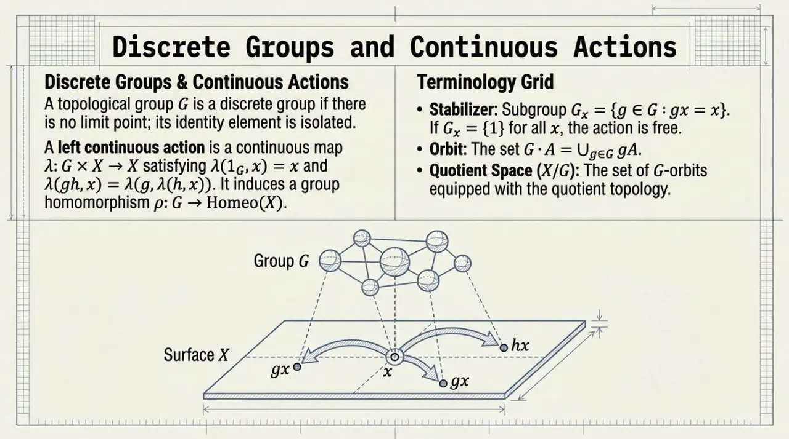

기둥 2 · 무리가 공간을 움직이는 법 · 07장
군과 작용 — 도장 찍기 규칙
움직임의 무리가 공간 위의 점을 옮기는 법
움직임의 무리가 공간 위의 점을 옮기는 법
핵심 질문 — 「되돌릴 수 있는 움직임」들의 무리가 공간에 도장을 찍으면, 점들은 어떻게 묶일까?
기둥 2의 주인공은 군이에요. 군은 「되돌릴 수 있는 움직임」들의 모음이에요. 이 움직임들이 공간의 점을 옮기는 것을 작용이라 하고, 한 점이 도장을 받아 갈 수 있는 자리 전체를 궤도라 해요. 궤도를 한 점으로 접으면 새 공간(몫공간)이 생깁니다.
숫자 요약은 이 장의 예시 계산에서 나온 값입니다(실제 데이터가 아닌 설명용 값).
오늘은 역할극! 여러분이 도장이 됩니다. 하루는 「90도 회전」, 시아는 「180도 회전」 맡아 주세요.
저 도장이에요? 쾅! 찍으면 점이 움직이는 거죠?
행렬·벡터, 복잡한 공식을 몰라도 됩니다. 그림을 움직여 보고, 밑줄 친 말을 누르면 뜻이 나옵니다.
이 페이지 사용법: 밑줄 친 말을 누르면 뜻이 나옵니다(Esc로 닫기). 단계마다 그림을 직접 움직여 보고, 끝의 확인 퀴즈로 점검하세요. 앞 장: 06 순서로 만든 공간 — 알렉산드로프 공간
수강생 6명이 「도장」(움직임 하나)이 되어 교실 바닥의 점을 옮겨요. 누가 어떤 점을 어디로 보내는지 기록하며 궤도·안정자·몫공간을 몸으로 익혀요.
…나는 「아무것도 안 하기」 도장. 제일 쉽다.
저는 180도 회전. 두 번 찍으면 X2랑 같아지네요.
「이 무늬는 90도 돌려도 같다」를 움직임의 모음(군)으로 말하면 계산할 수 있어요.
궤도를 한 점으로 접는 몫공간은 수직선을 원으로, 평면을 도넛 표면으로 바꿔요.
08장(얌전한 작용), 09장(타일), 10~11장(덮개)이 모두 「군이 공간에 작용한다」에서 시작해요.
새 단어가 다섯 개 나와요. 「도장」 하나로 기억하세요: 도장들의 모음(군), 찍기(작용), 찍힌 자리 모음(궤도), 찍어도 안 움직이는 도장(안정자), 같은 무리를 한 점으로(몫공간).
상황 질문 — 수직선 위 한 점에 「1만큼 옮기기」 도장을 앞뒤로 계속 찍으면, 점은 어디어디에 갈 수 있을까요?
λ(gh, x) = λ(g, λ(h, x))는 괄호가 너무 많아요.
학교 수학으로 보면: 중학교 함수의 「합성」과 같아요. 안쪽 괄호부터: 먼저 h를 찍고, 그 결과에 g를 찍어요.
| 식 조각 | 읽는 법 | 뜻 |
|---|---|---|
| λ(g, x) | 람다 지 엑스 | 도장 g를 점 x에 찍은 결과 (줄여서 gx) |
| λ(1_G, x) = x | 「아무것도 안 하기」 도장은 점을 그대로 둠 | |
| G·x | 지 엑스 궤도 | x에 모든 도장을 찍어 갈 수 있는 자리 전체 |
G = 정수, 도장 n = 「n만큼 옮기기」, x = 0.3
도장 2를 찍고 다시 도장 −5를 찍으면 0.3 → 2.3 → −2.7
도장 −3을 한 번 찍어도 −2.7 → 같음 (2 + (−5) = −3)
궤도: {…, −1.7, −0.7, 0.3, 1.3, 2.3, …}
도장 두 개를 이어 찍은 게 「더한 도장」 하나랑 같으니까, 정수 덧셈이 그대로 움직임이 되는구나.
발자국 도장을 「앞으로 한 걸음」, 「뒤로 한 걸음」 계속 찍으면, 발자국은 일정한 간격으로만 찍혀요. 그 발자국들이 한 점의 궤도예요.
군 G가 공간 X에 작용하면 각 움직임 g는 X를 찢지 않고 옮기는 변형이 돼요. 점 x의 궤도 G·x는 x가 갈 수 있는 자리 전체예요. 정수 ℤ가 수직선에 평행이동으로 작용하면 궤도는 x + 정수들이에요.
걸음 크기를 1, 2, 0.5로 바꾸면서 궤도 점의 간격을 보세요.
걸음을 0.5로 하면 궤도 점이 두 배! 점이 많을수록 좋은 작용이에요.
좋고 나쁨이 아니라 「띄엄띄엄한가」를 봐. 걸음이 아주 작으면 어떻게 될까?
원자료 「Discrete Groups and Continuous Actions」 왼쪽 위: 이산군(극한점 없음, 항등원 고립)과 왼쪽 연속 작용의 두 조건.

상황 질문 — 회전문을 돌려도 제자리에 있는 곳이 있을까요?
G_x = {g ∈ G : gx = x}에서 「:」는 뭐예요?
학교 수학으로 보면: 고등학교 집합의 조건제시법이에요. 「:」 뒤가 조건: 「gx = x를 만족하는 G의 원소 g 전부」.
| 식 조각 | 읽는 법 | 뜻 |
|---|---|---|
| G_x | 지 엑스 (안정자) | x를 제자리에 두는 도장 모음 |
| |G·x| × |G_x| = |G| | 궤도 크기 × 안정자 크기 = 도장 전체 수 (유한 군) | |
| 자유 작용 | 모든 점의 안정자가 「안 움직이기」 하나뿐 |
정사각형 회전 4개(0°, 90°, 180°, 270°)
모서리 근처 점: 궤도 4곳, 안정자 {0°} → 4 × 1 = 4
한가운데 점: 궤도 1곳(자기 자신), 안정자 4개 → 1 × 4 = 4
한가운데에서 안정자가 4개 → 자유 작용 아님
궤도가 작아지면 그만큼 안정자가 커져서 곱이 늘 4로 맞네요. 신기한 저울 같아요.
회전문을 몇 번 돌려도 문의 축(한가운데)은 제자리예요. 문 끝에 있는 손잡이는 돌릴 때마다 다른 자리로 가요.
점 x의 안정자 G_x는 x를 고정하는 원소들의 부분군이에요. 정사각형 회전군의 작용에서 한가운데 점만 안정자가 군 전체이고, 나머지 점은 안정자가 항등원뿐이에요. 고정점이 있으니 자유 작용이 아니에요.
정사각형 아무 곳이나 눌러 궤도를 보고, 「점을 한가운데로」도 눌러 보세요.
점이 어디 있든 궤도는 4개죠! 도장이 4개니까요.
한가운데를 눌러 봐. 4개가 한 점에 다 겹쳐.
원자료 오른쪽 「Terminology Grid」: 안정자, 자유 작용, 궤도, 몫공간.
상황 질문 — 게임 지도에서 오른쪽 끝으로 나가면 왼쪽 끝에서 나타난다면, 그 지도는 사실 어떤 모양일까요?
게임 지도의 오른쪽 끝과 왼쪽 끝이 이어져 있으면, 지도는 사실 둥근 띠(원)예요. 위아래도 이어지면 도넛 표면이 돼요.
몫공간 X/G는 궤도 하나를 점 하나로 보는 공간이고, 열린 집합은 「접기 전에 열려 있던 것」으로 정해요. ℝ/ℤ는 원, ℝ²/ℤ²는 도넛 표면(토러스)이에요.
감기 정도를 0%에서 100%까지 천천히 올려 보세요. 빨간 점들이 어떻게 되나요?
0, 1, 2, 3이 한 점으로 모였어요! 초록 점들도요!
그럼 0.4와 0.5는? 다른 궤도라 다른 점으로 남아야 해.
원자료 아래 그림: 군 G의 원소가 평면 X의 점 x를 gx, hx로 옮기는 모습, 그리고 몫공간 X/G의 정의.
X3가 AI에게 「유리수 전체 ℚ의 덧셈은 수직선에 평행이동으로 작용하는 이산군인가요?」라고 물었어요.
「셀 수 있다」, 「띄엄띄엄하다」, 「유한하다」는 서로 다른 말이에요. AI가 이 단어들을 바꿔 쓰면, 0에 다가가는 작은 예(1/2, 1/3, …)를 넣어 보세요.
0°, 90°, 180°, 270° 회전으로 이루어진 군이 정사각형에 작용할 때, 이 작용이 자유 작용인지를 두고 맞붙었어요.
「자유 작용이 아니야. 한가운데 점은 모든 도장에 제자리야.」
「보통 점은 다 움직이니까 자유 작용이죠!」
누가 맞을지 먼저 예상해 보고 단추를 누르세요. 판정은 계산 결과로만 합니다.
개념정리 흐름: 군의 작용과 궤도 → 안정자와 자유 작용 → 몫공간
| 개념 | 한 줄 뜻 | 일상 비유 | 비유의 한계 |
|---|---|---|---|
| 군 | 되돌릴 수 있는 움직임의 모음 | 도장 세트 | 도장은 물건이지만 군의 원소는 「규칙」 |
| 작용과 궤도 | 도장으로 점을 옮기기 / 갈 수 있는 자리 전체 | 발자국 도장 | 궤도는 무한할 수 있음 |
| 안정자와 자유 작용 | 제자리 도장 모음 / 고정점 없음 | 회전문 축 | 안정자 공식은 유한 군에서의 모양 |
| 몫공간 | 궤도를 한 점으로 접은 공간 | 이어진 게임 지도 | 작용이 얌전하지 않으면 이상한 공간이 됨(08장) |
| 이산군 | 항등원이 고립된 군 | 띄엄띄엄한 걸음 | 「셀 수 있음」과 다름 (유리수 반례) |
역할극 끝! 오늘의 도장 공식: 궤도 크기 × 안정자 크기 = 도장 수.
…「안 움직이기」 도장이 사실 제일 중요했네.
90도 도장 네 번 찍으니까 제자리로 와서 신기했어요!
한가운데 점 하나 때문에 졌어요…. 다음엔 토론에서!
다음 장 예고: 08장 1:1 토론에서 하루와 X1이 「얌전한 작용」의 네 층을 두고 맞붙어요. 자유로운데도 말썽인 카포비치 반례가 등장해요.